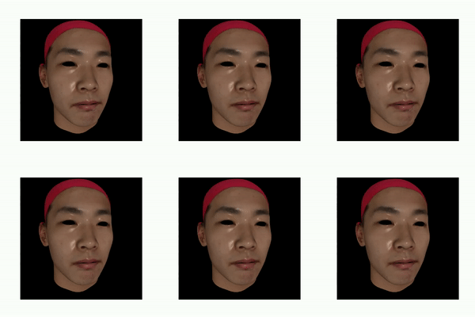

I am a Senior AI Engineer with a PhD in Computer Science, focused on multimodal AI systems, LLM/VLM pipelines, generative modeling, transformer architectures, robotics perception, and reinforcement learning. My work spans research and deployment: from controllable 3D generative models and vision-language systems to distributed training, low-latency inference, and robust closed-loop behavior in real-world environments.
I built an offline reinforcement learning benchmark to study a practical failure mode in sequential decision systems: stable or smooth offline training does not necessarily translate to strong closed-loop behavior at rollout time. The project compares Behavior Cloning (BC), Implicit Q-Learning (IQL), and Conservative Q-Learning (CQL) on MuJoCo locomotion and manipulation tasks.
YOLOv8+ extends the Ultralytics framework with a new pose-segment task that jointly performs object detection, instance segmentation, and pose estimation in a single forward pass. Instead of maintaining separate models or multi-stage pipelines, I modified the training and inference stack to support a unified multitask perception workflow.
The project required coordinated changes across the model head, dataset handling, collate logic, loss design, metrics, and export pipeline. I also extended the workflow to support deployment-oriented export formats including ONNX, TorchScript, and TensorRT, making the project both a modeling contribution and a practical systems integration effort.
This project addressed a practical deployment gap in multi-task perception systems. While TensorRT conversion for Detectron2 instance segmentation is more commonly available, support for joint instance segmentation and keypoint pose estimation is far less documented. I built a deployment workflow that preserved boxes, masks, and keypoints together in a TensorRT-based inference pipeline.
The work required coordinated changes across model export, ONNX graph generation, keypoint-aware output handling, tensor I/O binding, inference, and visualization. The result was a practical conversion path for deploying a Mask R-CNN model that jointly performs segmentation and pose estimation instead of dropping keypoints during optimization.
This project focuses on controllable 3D face generation for applications such as virtual avatars, facial expression transfer, and synthetic data generation. While existing 3D generative models can produce compact representations of facial shape and appearance, they often lack fine control over subtle expressions.
I developed a 3D face generative framework that decouples identity and expression, enabling granular expression control while preserving identity. The model combines a supervised autoencoder with adversarial training to generate high-quality 3D faces in both shape and texture, and supports learning from either holistic expression labels or Action Unit labels.

This project explores a practical framework for safe offline-to-online reinforcement learning in vision-based robotic manipulation. The policy starts from offline demonstrations with image observations and robot proprioception, then adapts online under strict safety constraints instead of relying on unrestricted exploration.
The method combines visual scene encoding, actor-critic learning, a behavioral-cloning prior, and uncertainty-aware action filtering. A critic ensemble estimates both value and uncertainty, while a safety module regularizes the actor toward dataset-supported behavior offline and filters risky actions during deployment. Online adaptation then gradually relaxes these constraints, enabling cautious improvement under distribution shift.
Built an interactive annotation and segmentation tool around Segment Anything to support fast mask creation through point prompts, bounding-box prompts, and manual polygon annotation.
The system includes undo, clear, brush, and save functionality, supports iterative visual feedback during annotation, and exports results in COCO format for downstream training pipelines. I also added Detectron2-based visualization to validate the resulting masks and annotations directly on top of the source images.